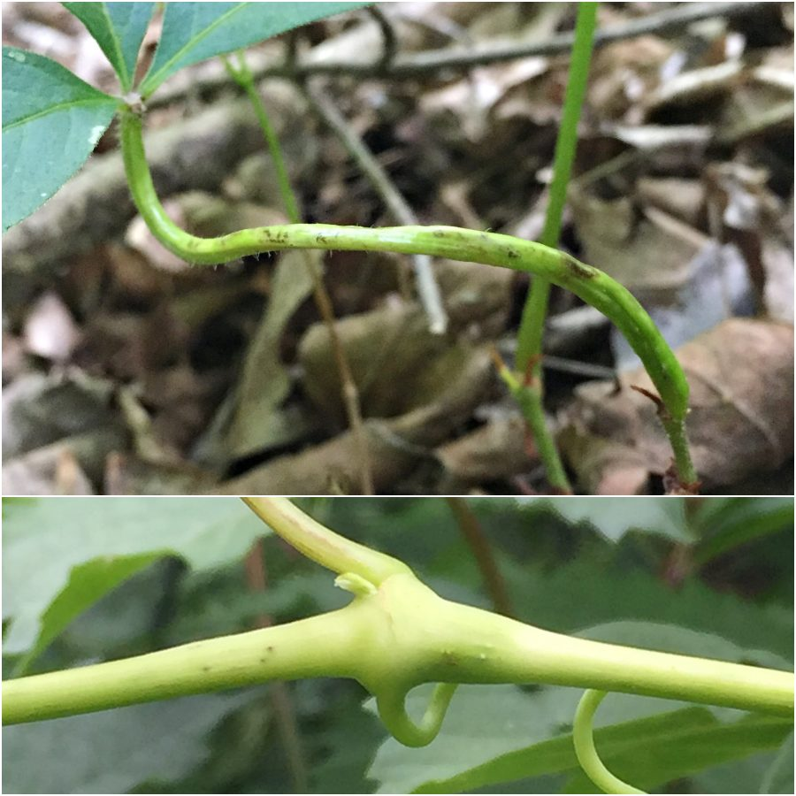
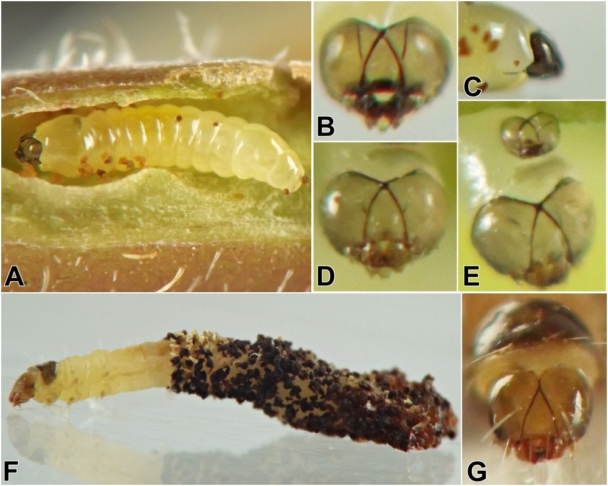
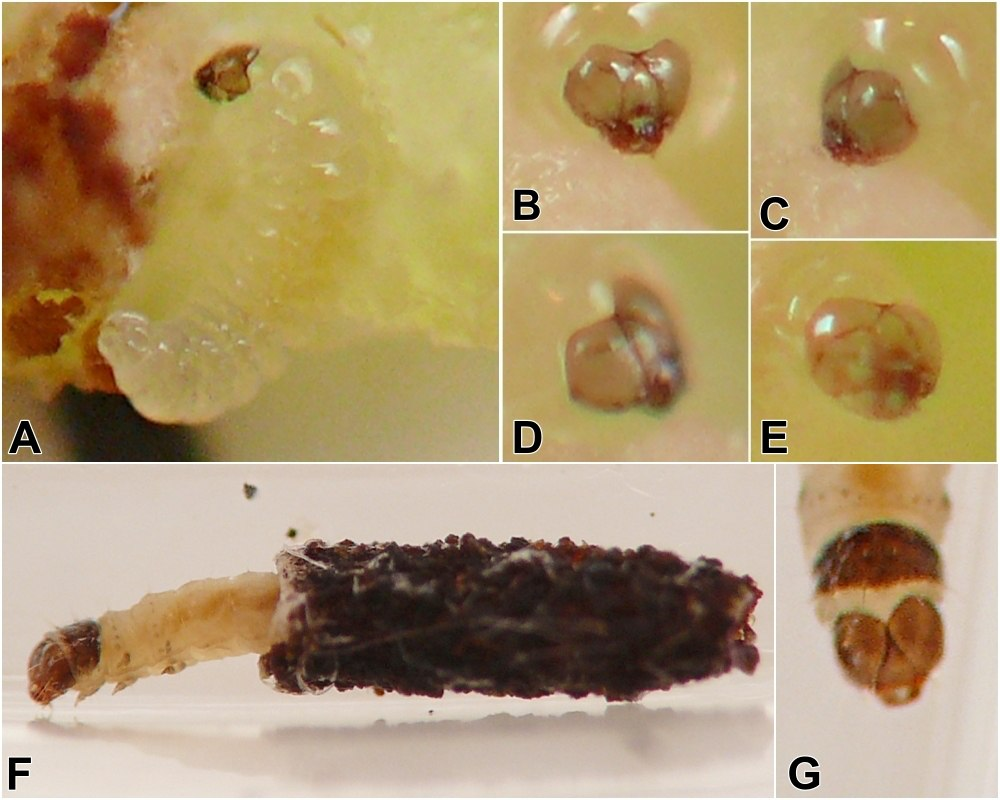

Distinct larval forms in heliozelid galls on Parthenocissus: weevil inquiline or advanced metamorphosis?
{kind=link}

I observed two forms of insect larvae inside stem and petiole galls on Parthenocissus as part of my stem insect survey work. For full written descriptions and images documenting these galls, visit the individual record pages for the stem galls (record 0729) and the petiole galls (record 0363). The galls appear to be the work of Heliozela spp. (Lepidoptera: Heliozelidae), based on the accounts in Weiss and West (1925) and McGiffen and Neunzig (1985), and the clearly lepidopteran larvae ("larva form #2") that emerge from these galls, wearing cylindrical, frass-covered cases, match the overall description in the latter reference.
However, younger, smaller larvae I found occurring in the same galls ("larva form #1") are morphologically distinct, lacking thoracic legs or a clearly differentiated prothoracic shield. McGiffen and Neunzig also reported observing legless larvae in the shoot, petiole, and peduncle galls they examined. They concluded that these larvae belonged to a weevil, "possibly Craponius n. sp." (p. 52), and further wrote:
[The weevil larvae] feed on gall tissue and likely consume Heliozela sp. near aesella larvae encountered. These weevil larvae leave the galls and pupate in the soil. Weevil larvae can be distinguished from Heliozela larvae by the weevils' lack of thoracic legs and crochets. (p. 52)
Although these authors concluded the legless larvae they observed were weevils, I am unsure of the identity of the form #1 larvae I observed. These larvae occurred early in the progression of both the petiole galls and the single, slightly later-season stem gall that I dissected. I did not observe any of these larvae to exit the galls in my rearing containers; only form #2 larvae did so. Furthermore, in the stem gall example, I found a very young form #1 larva inside the gall, patched the dissected gall back together with the larva returned to its interior, and kept the gall in a rearing container for several days, after which a form #2 larva emerged in a classic frass-covered case. There had been no trace of any other larva in the gall when I originally dissected it, and there was no trace of the form #1 larva after the form #2 larva emerged from the gall.
These observations made me wonder if form #1 and form #2 larvae could simply be different instars of the same Heliozela species, with the larvae undergoing a form of advanced metamorphosis as they mature, eventually gaining thoracic legs and a clearly differentiated prothoracic shield where before these features were absent. However, further observations would be needed to test this hypothesis, as I was unable to immediately rule out the possibility that form #1 larvae were weevils.
Images comparing the two larval forms in both the petiole and stem galls are included below. For numerous additional images and information, see records 0363 and 0729.
UPDATE, September 2026: The development (or lack thereof) of thoracic legs among world heliozelid larvae was reviewed by van Nieukerken and Eiseman (2020), who observed that fully developed thoracic legs were reported only from the larva of Heliozela aesella, while among the Australian heliozelid fauna "[a]t least some [taxa] also have more developed legs, although many are also legless (Andy Young & Mike Halsey, pers. comm.)" (p. 123). Especially relevant to the uncertainty about the identity of form #1 Parthenocissus larvae discussed here, they also note that a transition from legless to legged over the course of larval development has been previously reported in the European oak-feeding species Heliozela sericiella (Prota 1962). Furthermore, the tentorial structures in head capsules of the form #1 larvae I observed (see photos below) appear superficially similar to those in the early-instar H. sericiella larva figured by Prota. This may lend support to the hypothesis that, in Parthenocissus galls, the form #1 larvae are earlier instars of form #2 Heliozela larvae.
{kind=link}

{kind=link}

Thanks to C.S. Eiseman and E.J. van Nieukerken for reviewing a first draft of this document and guiding me to prior literature on heliozelid larval morphology, including an English translation of the Prota paper edited and annotated by EJvN.
- McGiffen, K.C. and H.H. Neunzig. 1985. A guide to the identification and biology of insects feeding on muscadine and bunch grapes in North Carolina. North Carolina Agricultural Research Service, Bulletin 470.[return to in-text citation]
- Nieukerken, E.J. van and C.S. Eiseman. 2020. Splitting the leafmining shield-bearer moth genus Antispila Hübner (Lepidoptera, Heliozelidae): North American species with reduced venation placed in Aspilanta new genus, with a review of heliozelid morphology. ZooKeys 957: 105-161. https://doi.org/10.3897/zookeys.957.53908[return to in-text citation]
- Prota, R. 1962. Contributi alla conoscenza dell’entomofauna della Quercia da sughero (Quercus suber L.). 1. Sul lepidottero eliozelide galligeno Heliozela stanneella F. v. R. Studi Sassaresi, Sezione 3, Annali della Facoltà di Agraria dell'Università di Sassari 9(2): 345-419. [English language translation by DeepL translator, edited & annotated by E.J. van Nieukerken, 2020, updated 2021. English title: "Contributions to the knowledge of the entomofauna of cork oak (Quercus suber L.). 1. On the gallmaking heliozelid moth Heliozela stanneella F. v. R."][return to in-text citation]
- Weiss, H.B. and E. West. 1925. An adelid gall on Virginia creeper (Lepidoptera). Entomological News 36(4):116-118. Retrieved September 7, 2023 from https://www.biodiversitylibrary.org/page/24738162.[return to in-text citation]
Page created: September 2, 2026. Last update: September 5, 2026